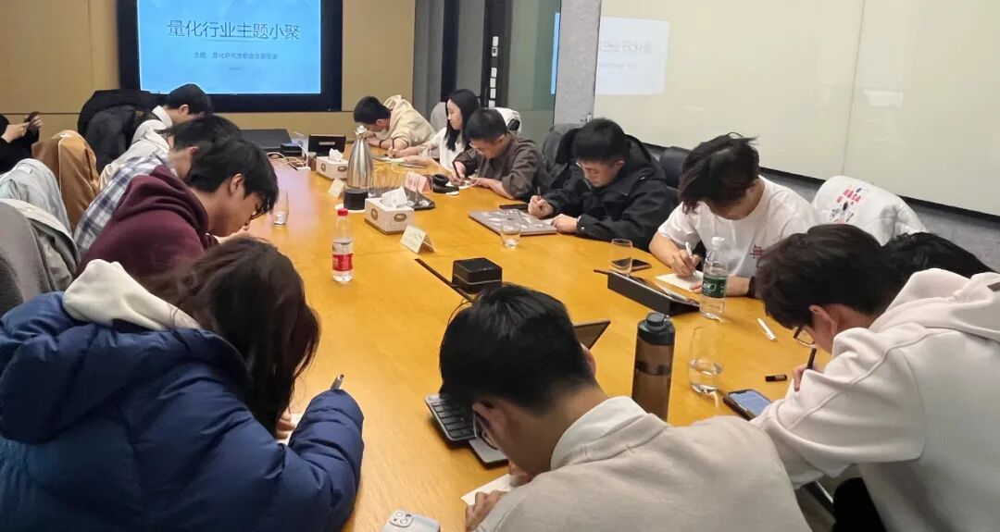

主题回顾
本次主题：量化研究员职业发展图鉴
主题背景：距离A股空前绝后的量化流动性危机已经过去了一个月，整个行业似乎都弥漫着一股劫后余生，而又惴惴不安的气氛。虽然市场的大地震已经过去，但行业真正的洗牌可能才刚刚开始，量化私募内部的灾后重建、人员优化、后续监管和各项规范的陆续出炉、客户端认知重塑以及资金偏好转移、甚至是量化股灾后新市场环境下的 alpha 特征，也许都是需要我们共同面对的。
交流话题：1.从业者分享自己的职业生涯，如工作内容、职业发展等？2.股指高频期货交流？3.外汇交易量化开发？4.AI深度学习模型交流与 DL 模型暴露问题？5.2024年1月这一波给量化行业格局带来了哪些变化？
小聚成员
本次活动根据大家填写的报名表，依照“深度交流+多元讨论”的主旨，一共邀请15位小伙伴参与，从事量化行业全职工作的伙伴11位，目前在量化行业实习的伙伴4位，值得一提的是，参与本次小聚的全职和实习伙伴所在公司多为知名百亿私募、头部券商、自营机构。

活动反馈
了解大家的想法和行业动态。——量化研究 今天YT的发言对我启发比较大，能从更高维度探讨2月回撤危机的数据应不应该放到样本中来，另外，大家对数字货币的交流也让我意识到不同收益来源很重要。——WX 余老师和徐老师等对于虚拟货币市场的一些见解对我有一定的启发，大家对于目前量化的前景和行情也让我有一些认知上的进步。——某量化研究员 今天W关于虚拟货币的分享让人很有收获，关于跨数据源事件驱动给了我很大的启发。——余天
今天很高兴能见到许多全职的同行，从实习生到正式员工的转变还是很大的，在意的地方和思维方式都不尽相同。——不会C++的菜鸡
1.白灼生菜可以减脂，与2.5×5训练方法。——某热衷减脂的量化研究员 今天Z同学的发言对我很有启发！他介绍行业实盘经验以及行业动态让我对这个行业有了新的了解。——某研究员 今天不仅交流了高频、alpha的相关内容，也又加密货币进行了更加深入的了解，对于整体交易体系也有了更进一步的认知。——某Quant YT的发言对我来说比较有收获，从HR的视角来看了解到了更多量化在整体数据以及策略选择的倾向性，更多的是以长线的视角去做分享。——正定HR 了解了部分股票T0的相关信息，特别是容量和交易端在全天执行的难度，还有手动T0团队的生存现状。——某私募从业QR 非常高兴今天能认识许多新的做量化的朋友们，印象最深的是对风险和收益的判断，包括任何收益背后都有其相应的风险，关键在于如何控制和选择。——量化新人
张同学分享的关于T0策略，研究方法对我很有启发，感谢高东老师创造了大家交流的机会！——券商QuantDev小白 量化小聚活动让我听到了许多行业内的八卦，对这个行业的现状有了更多的了解，关于T0交易的交流也让我深受启发！——真量化小白 今天听到几位做数字货币的同学分享了一些相关思路，感觉很有启发。——某私募RS

大家的收获札记